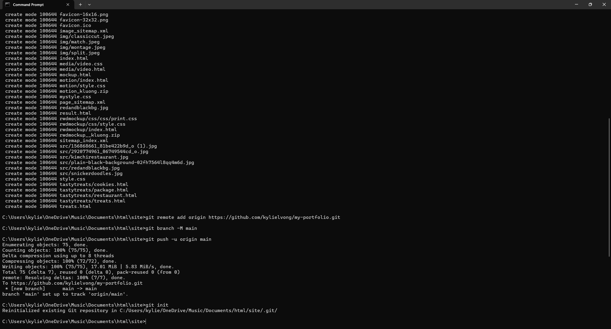
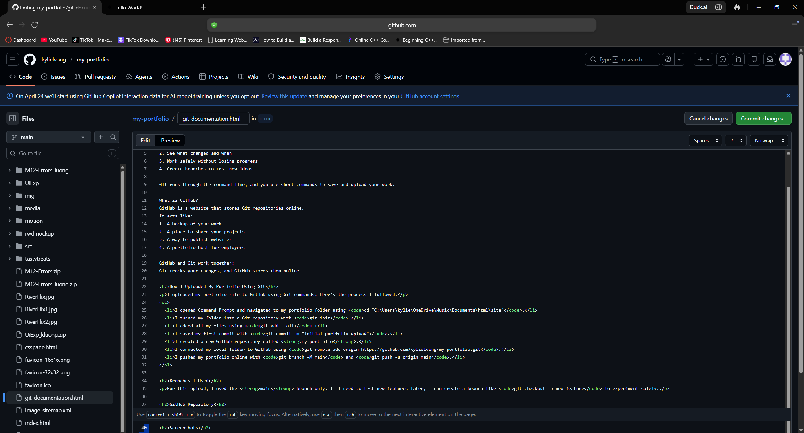

What is Git?
Git is a version control system. That means it keeps track of changes you make to files over time. Instead of saving multiple copies like “portfolio_v2” or “final_final_reallyfinal,” Git records every change in a timeline called commits.
This lets you:
- Go back to older versions
- See what changed and when
- Work safely without losing progress
- Create branches to test new ideas
Git runs through the command line, and you use short commands to save and upload your work.
What is GitHub?
GitHub is a website that stores Git repositories online.
It acts like:
- A backup of your work
- A place to share your projects
- A way to publish websites
- A portfolio host for employers
GitHub and Git work together: Git tracks your changes, and GitHub stores them online.
How I Uploaded My Portfolio Using Git
I uploaded my portfolio site to GitHub using Git commands. Here’s the process I followed:
- I opened Command Prompt and navigated to my portfolio folder using
cd "C:\Users\kylie\OneDrive\Music\Documents\html\site". - I turned my folder into a Git repository with
git init. - I added all my files using
git add --all. - I saved my first commit with
git commit -m "Initial portfolio upload". - I created a new GitHub repository called my-portfolio.
- I connected my local folder to GitHub using
git remote add origin https://github.com/kylielvong/my-portfolio.git. - I pushed my portfolio online with
git branch -M mainandgit push -u origin main.
Branches I Used
For this upload, I used the main branch only. If I need to test new features later, I can create a branch like git checkout -b new-feature to experiment safely.
GitHub Repository
View my portfolio repository on GitHub
Screenshots
Here are screenshots showing the commands I used and my GitHub repository:

